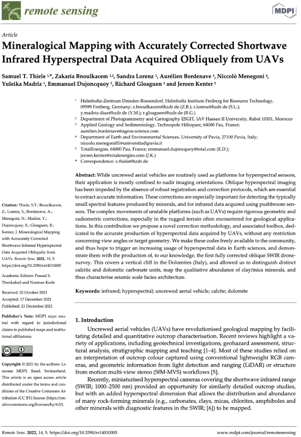
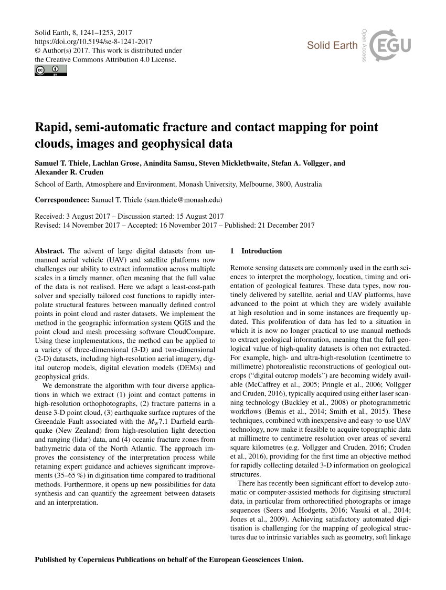
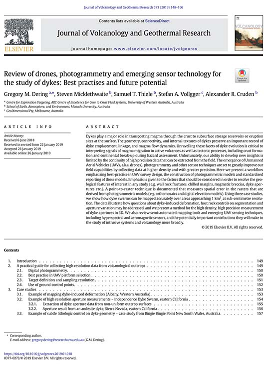

The earth is a complex, challenging planet. It is highly structured in many ways, unstructured in others, and largely hidden from view. As an earth scientist I enjoy the challenge of understanding and interpreting the earth systems and processes that shape this complexity.
I make geoscience digital, applying data science and computer simulation at their cutting edge to capture, synthesize and analyse diverse and multi-scale earth system data.
Things I'm interested in
UAV Remote Sensing
Drones allow earth observation at unprecedented resolution and accuracy. But, extracting meaningful information from these datasets, and so building scientific understanding, remains a significant challenge.




Plus much more
Check out my ResearchGate profile to see more of my work.